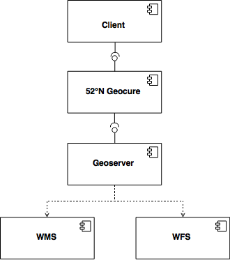
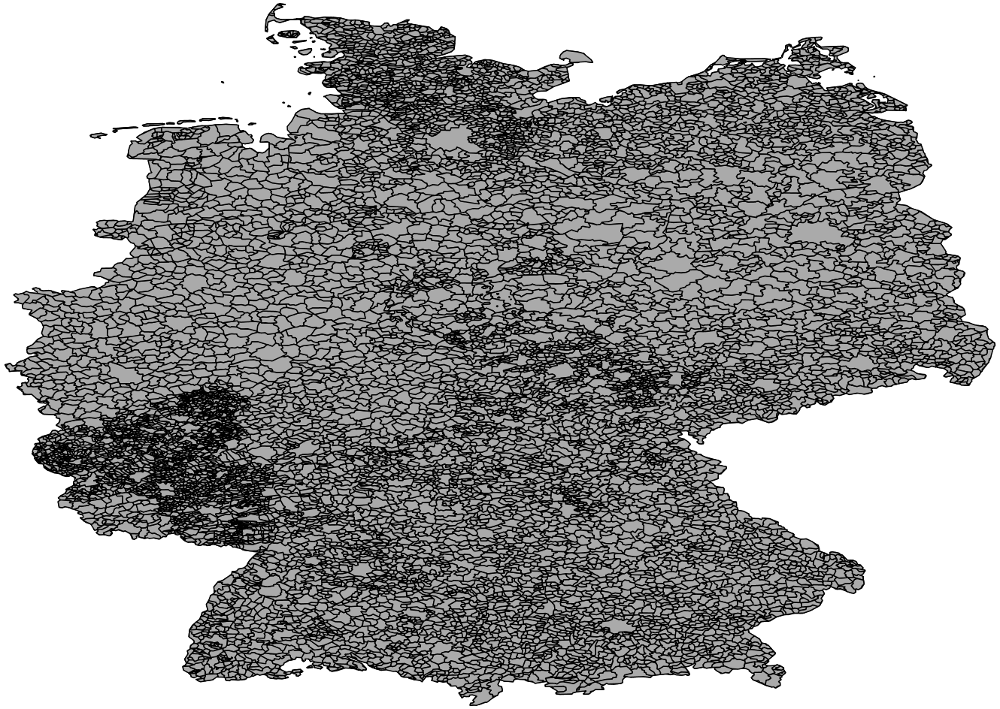
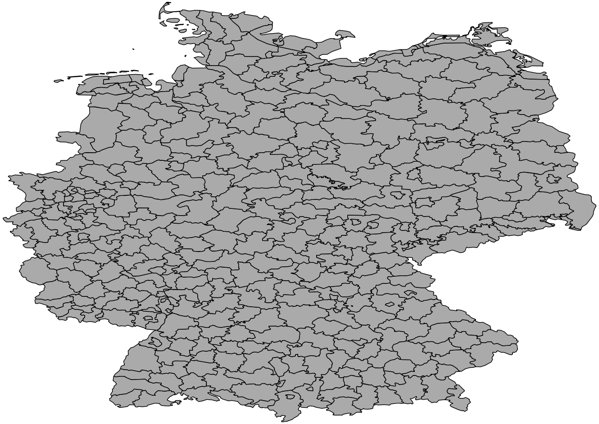
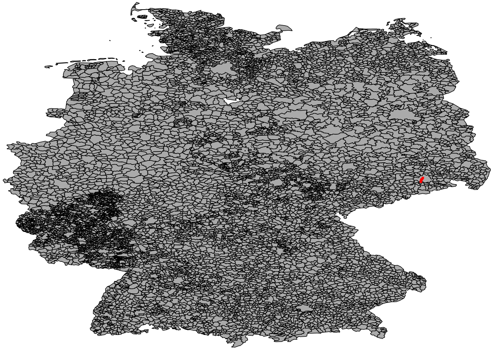
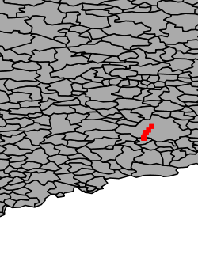

About
The 52°North Geocure Rest API serves as a proxy for OGC Web- and Featureservices, which enables a REST-like interaction with WM- and WF-services. The goal is to provide an easy to use interface for accessing geodata.
Currently the GeoServer is supported.
Document status
| What | When |
|---|---|
| Initial creation | 2016-08-16 |
General
Architecture and Role of Geocure REST API
From a developer's perspective, the Geocure REST API is implemented as a proxy as shown in the previous figure. Clients access the Geocure WMS REST Proxy via REST URLs explained in this document. The Geocure WMS REST Proxy accesses performes the requests on a specified WMS and returns the results.

The above image shows the internal structure of Geocure. Modules in blue are developed for - and are delivered with the service. Modules in gray are imported from external sources.
Content-Types
The content type for message exchange is
application/json
. It is set as the default content type but can be set via HTTP header.
Common Status Codes
A client shall expect the following HTTP status codes returned by the API.
| Code | When |
|---|---|
200 |
Status OK. All went fine.
|
400 |
Status Bad Request. The request is not valid.
|
500 |
Status Internal Server Error. Please contact the webadmin. In some
cases an error message will be shown. But in general the server logs will help to
trace the problem.
|
Endpoint URL
For instance, a valid endpoint is provided by the following
enpoint URL: http://colabis.dev.52north.org/geocure/services.
Offered Services
URLs
API calls are triggered by using the following URLs.
| Method | Path | Content-Type | Description |
|---|---|---|---|
GET |
<base-url>/services |
application/json |
Returns a list of offered services. |
Examples
Available Services Request
GET http://colabis.dev.52north.org/geocure/services HTTP/1.1 Host: colabis.dev.52north.org Accept: application/json
HTTP/1.1 200 OK
Content-Type: application/json;charset=UTF-8
[
{
"id": "service1COLABIS",
"label": "name of the service",
"description": "Returns sample data via a WM-Service",
"href": "http://colabis.dev.52north.org/geocure/services/service1COLABIS"
}
]
services/services.json.In this file, several services can be deposited.
Service Capabilities
URLs
API calls are triggered by using the following URLs.
| Method | Path | Content-Type | Description |
|---|---|---|---|
GET |
<base-url>/services/{service-id} |
application/json |
Returns the capabilities of a requested service. |
Examples
Service Capabilities Request
GET http://colabis.dev.52north.org/geocure/services/service1COLABIS HTTP/1.1 Host: colabis.dev.52north.org Accept: application/json
HTTP/1.1 200 OK
Content-Type: application/json;charset=UTF-8
{
"id": "service1COLABIS",
"label": "name of the service",
"description": "Returns sample data via a WM-Service",
"capabilities": [
"http://colabis.dev.52north.org/geocure/services/service1COLABIS/maps",
"http://colabis.dev.52north.org/geocure/services/service1COLABIS/features"
]
}
capabilities contains the supported services. In this example, we see endpoints for a WMS (/maps) and a WFS (/features).
Service Maps
URLs
API calls are triggered by using the following URLs.
| Method | Path | Content-Type | Description |
|---|---|---|---|
GET |
<base-url>/services/{service-id}/maps |
application/json |
Returns an overview of the offered layers and their global extent for the service with id {service-id}. |
Examples
Service Maps Request
GET http://colabis.dev.52north.org/geocure/services/service1COLABIS/maps HTTP/1.1 Host: colabis.dev.52north.org Accept: application/json
HTTP/1.1 200 OK
Content-Type: application/json;charset=UTF-8
{
"layers": [
{
"id": "ckandev:_23964ffe_67e1_476c_9c71_f25ed8dfe5e2",
"title": "Sample measurements of road pollution in Dresden ",
"href": "http://localhost:8001/services/service1COLABIS/maps/ckandev:_23964ffe_67e1_476c_9c71_f25ed8dfe5e2/render"
},
{
"id": "ckandev:_a2508d4e_74c1_4a02_b1cc_c05db68f538e",
"title": "DWD administrative areas",
"href": "http://localhost:8001/services/service1COLABIS/maps/ckandev:_a2508d4e_74c1_4a02_b1cc_c05db68f538e/render"
},
{
"id": "ckandev:_eece6e0c_0384_4889_9cb8_8529bd148116",
"title": "dwd-regionen-staedte-und-gemeinden",
"href": "http://localhost:8001/services/service1COLABIS/maps/ckandev:_eece6e0c_0384_4889_9cb8_8529bd148116/render"
}
],
"crs": [
{
"TYPE_NAME": "WMS_1_3_0.BoundingBox",
"crs": "EPSG:4326",
"minx": 5.82013988494873,
"miny": 47.2314224243164,
"maxx": 15.0836019515991,
"maxy": 55.0963134765625
}
]
}
Global View
Service Maps Global Rendering
URLs
API calls are triggered by using the following URLs.
| Method | Path | Content-Type | Description |
|---|---|---|---|
GET |
<base-url>/services/{service-id}/maps/render |
application/json |
Returns all layers in the default format, which is defined in file services/services.json. |
Examples
Service Maps Global Rendering Request
GET http://colabis.dev.52north.org/geocure/services/service1COLABIS/maps/render HTTP/1.1
Host: colabis.dev.52north.org
Accept: image/png
HTTP/1.1 200 OK
Content-Type: image/png;

Service Maps Layer Rendering
URLs
API calls are triggered by using the following URLs.
| Method | Path | Content-Type | Description |
|---|---|---|---|
GET |
<base-url>/services/{service-id}/maps/{layer-id}/render |
application/json |
Returns the by {layer-id} specified layer for a service with id service-id in the default format,
which is defined in file services/services.json.
Using a comma separated list, multiple layers can be requested.
The order of rendering is analogous to the order in the list of layers. |
Examples
Service Maps Single Layer Rendering Request
GET http://colabis.dev.52north.org/services/service1COLABIS/maps/ckandev:_a2508d4e_74c1_4a02_b1cc_c05db68f538e/render HTTP/1.1 Host: colabis.dev.52north.org Accept: image/png
HTTP/1.1 200 OK Content-Type: image/png;
ckandev:_a2508d4e_74c1_4a02_b1cc_c05db68f538e.
Service Maps Multiple Layer Rendering Request
GET http://colabis.dev.52north.org/services/service1COLABIS/maps/ckandev:_eece6e0c_0384_4889_9cb8_8529bd148116,ckandev:_23964ffe_67e1_476c_9c71_f25ed8dfe5e2/render Host: localhost:8001 Accept: image/png
HTTP/1.1 200 OK Content-Type: image/png;
Queries
The rendering requests can be enriched with certain query parameters, as shown in this section.
URLs
For following URLs the subsequent query parameters may be used.
| Method | Path | Content-Type | Description |
|---|---|---|---|
GET |
<base-url>/services/{service-id}/maps/render |
application/json |
Returns all layers in the default format, which is defined in file services/services.json. |
GET |
<base-url>/services/{service-id}/maps/{layer-id}/render |
application/json |
Returns the specified layer with id {layer-id} for service with id service-id in the default format,
which is defined in file services/services.json.
Using a comma separated list, multiple layers can be requested.
The order of rendering is analogous to the order in the list of layers. |
Query Parameters
| Parameter | Example | Supported Values | Description |
|---|---|---|---|
minx |
minx=5.8662505149842445 |
numeric |
Puts the minimal x value. |
miny |
miny=47.27012252807623 |
numeric |
Puts the minimal y value. |
maxx |
maxx=15.041815757751444 |
numeric |
Puts the maximal x value. |
maxy |
maxy=55.05652618408206 |
numeric |
Puts the maximal y value. |
width |
width=500 |
Integer > 0 |
Number of pixels for image width. |
height |
height=500 |
Integer > 0 |
Number of pixels for image height. |
format |
format=image/png |
Depending on the service.
|
Sets the response format |
crs |
crs=EPSG:4326 |
|
Sets the coordinate reference system of the response |
Service Maps Multiple Layer Rendering Request
GET http://colabis.dev.52north.org/services/service1COLABIS/maps/ckandev:_eece6e0c_0384_4889_9cb8_8529bd148116,ckandev:_23964ffe_67e1_476c_9c71_f25ed8dfe5e2/render?minx=13&miny=50&maxx=14&maxy=52&width=250&height=350&EPSG:4326&format=image/tiff Host: localhost:8001 Accept: image/tiff
HTTP/1.1 200 OK Content-Type: image/tiff;